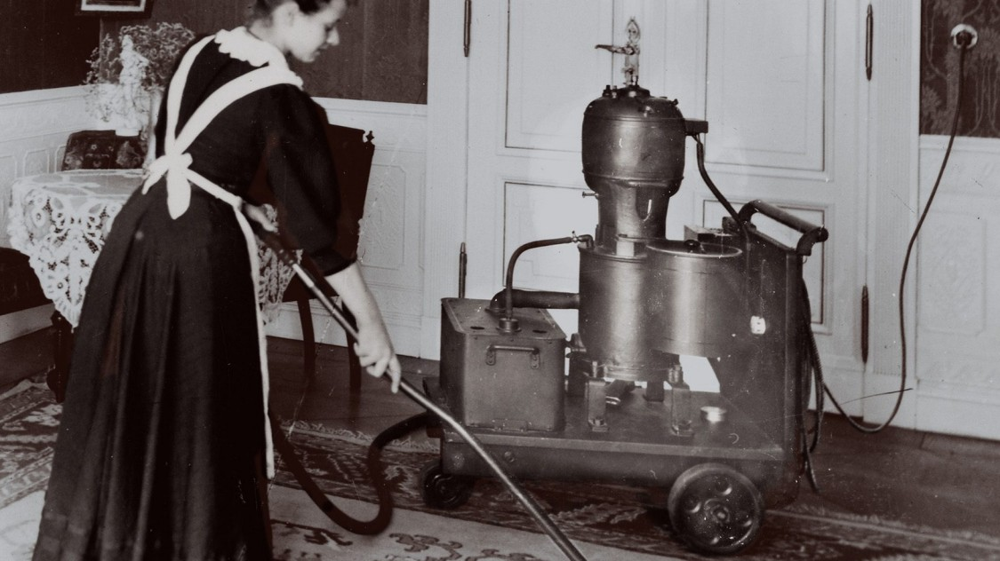
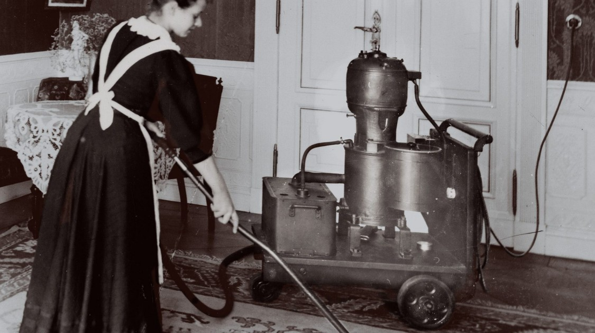
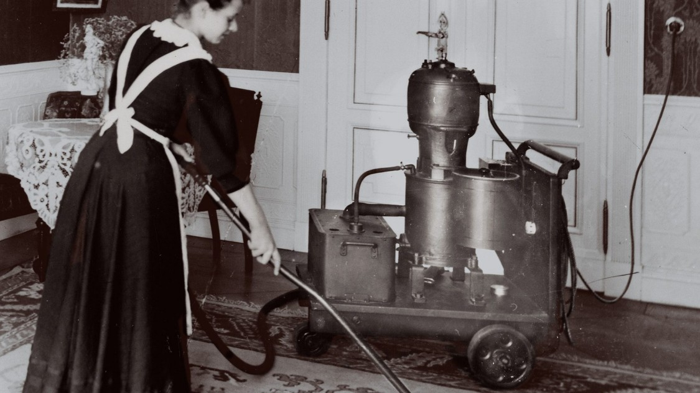
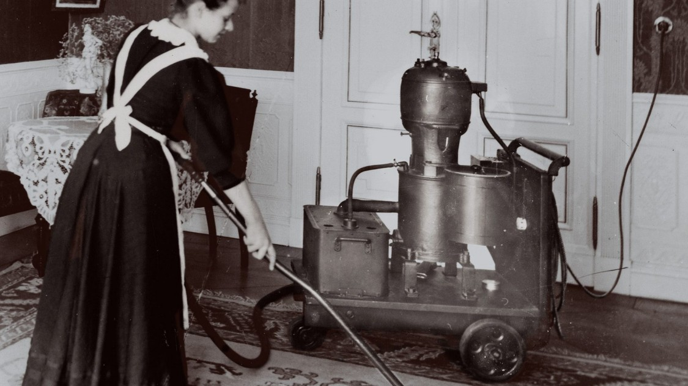
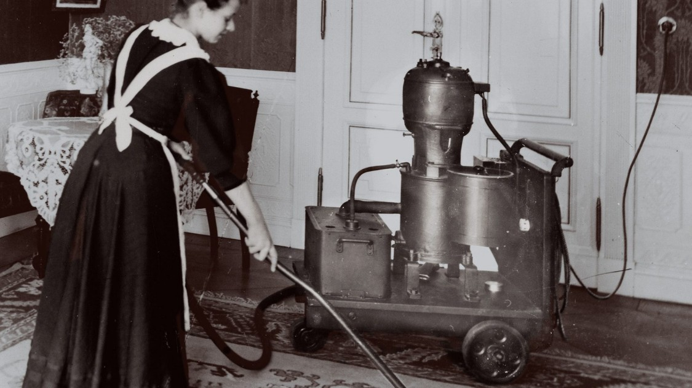

Ergonomic Laptop
Let's take a look how it was?
Became to
Clothes were difficult without any reason. Just why not
And now
Things were huge and unconforable to use

But now we even no need to touch some of them
All humanity spends lifetime on the computer
But ergonomic of the main input tool stayed in the century before last
Keyboards that put everywhere force our hands stay unnatural
There is a sort of devices which improve hand feelings
But it doesn't fit in lapopt format
But we can do it better
Orholinear keyboard
Difference
And let's take a look how it can be
 


 
